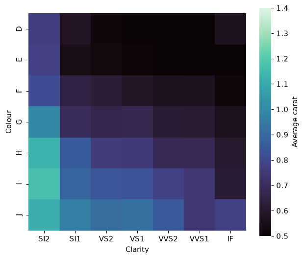
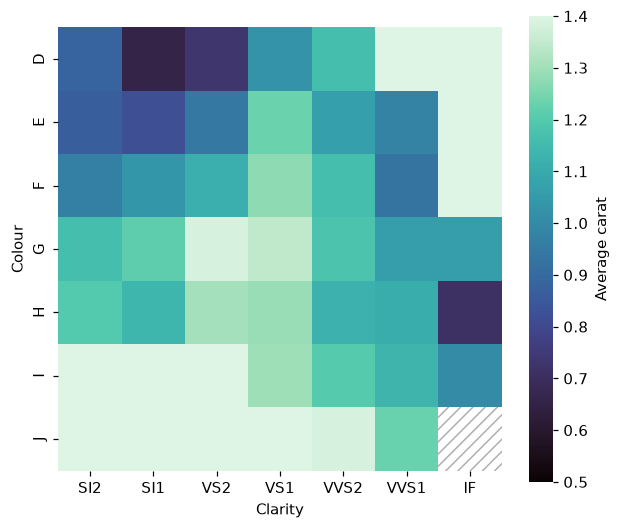
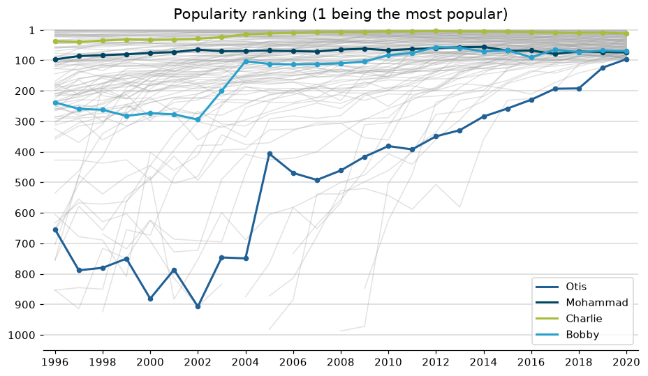
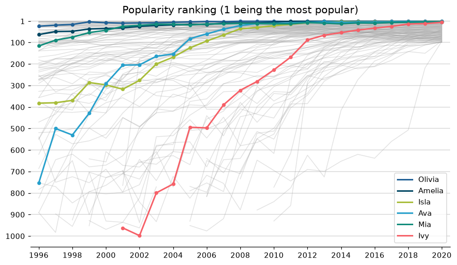

The submission contains assignment5.ipynb, the two data files (diamonds.csv, names.csv) and this report.
The notebook targets Python 3.12.12 with pandas 3.0.6, matplotlib 3.11.2, seaborn 0.13.2 and ipywidgets 8.1.9, and imports nothing else.
Run all cells from top to bottom. Each question ends in an interactive widget panel, and its figure is redrawn whenever a control changes.
Both questions use the same pattern. A plain plotting function takes the widget values as arguments (draw_heatmap(origin), draw_names(sex_label, text)).
widgets.interactive_output connects that function to the widgets, and a VBox stacks the controls above the figure.
Because the plotting logic is separate from the widgets, each function can be called and tested directly. It also means each redraw clears the previous figure, so figures do not pile up.
type column through a dictionary (natural, lab, and no filter).mean_carat_table(origin) filters the rows and builds a colour × clarity table of the mean carat with pivot_table.
It then reindexes the rows to D → J and the columns to SI2 → IF.
The axes therefore follow the grading scale, not alphabetical order, and colourless, internally flawless diamonds land in the top-right corner as required.NaN rather than dropping the row or column.mako). Mean carat is an ordered quantity with no meaningful midpoint, so a single-direction lightness ramp suits it. Dark cells are light diamonds and pale cells are heavy ones.square=True) keep the grid even, so no category looks more important because of its cell shape.mako colour (≈1.4 carats). The axes background is drawn with grey diagonal hatching instead, so “no diamonds” cannot be mistaken for “very heavy diamonds”.

For natural diamonds, the heaviest stones (about 1.1–1.2 carats) have the poorest clarity (SI2) and the most colour (H–J). Colourless, higher-clarity stones average close to 0.5 carats. Lab-grown diamonds are heavier almost everywhere, and several cells reach or exceed the top of the scale (D/E-IF average about 2.5–2.75 carats). The trade-off between size and quality seen in natural stones therefore largely disappears for manufactured ones. The All view mixes the two and sits in between.
rank_table(sex) takes the names ranked 1–100 in 2020 for one sex. Using rank <= 100 keeps tied names together; boys have a three-way tie at 98, which still gives exactly 100 names.
It then pivots every year of those names into a year × name table of ranks, reindexed to 1996–2020.NaN, and matplotlib draws a gap rather than inventing a rank. Ivy, for example, only appears from 2001.RANKS. Each keystroke then only re-plots, which keeps the text box responsive.ToggleButtons widget with the options “Baby boy names” and “Baby girl names” selects which RANKS table is drawn.parse_names upper-cases the input (the data is stored in capitals, so matching ignores case), splits it on spaces and removes duplicates while keeping the typed order.
It returns three lists: names to highlight (the first six matches), matches beyond the sixth, and names not in the 2020 top 100.| Requirement | Implementation |
|---|---|
| Top 100 names of 2020 as faded grey lines | One ax.plot call draws all 100 columns in grey (alpha=0.3, width 1, drawn underneath) |
| Boy / girl toggle | ToggleButtons, value mapped to sex |
| Multiple names, space-separated, case-insensitive | text.upper().split(), de-duplicated |
| Highlighted line with a point at each year | Line of width 2 plus a separate marker="o" layer, drawn on top (zorder=3). Only the line is labelled, so the legend shows a plain line like the original |
| Maximum 6 names; the six given colours | found[:6], zipped with #206095 #004662 #A8BD3A #27A0CC #118C7B #F66068 |
| Legend names capitalised | name.capitalize() (e.g. OTIS → Otis), legend in the lower right |
| Inverted y-axis; ticks 1, 100 … 1000; horizontal grid | invert_yaxis(), set_yticks([1, 100, …, 1000]), grid(axis="y") |
| x ticks every 2 years | set_xticks(range(1996, 2021, 2)) |
| Title; no axis labels; no left/top/right borders | Title “Popularity ranking (1 being the most popular)”; no x/y labels set; three spines hidden |


The notebook was run top to bottom in a fresh Jupyter kernel in the pinned environment, with no errors or warnings in any cell.
Both plotting functions were also called directly with Python warnings turned into errors, for every dropdown option and these name inputs:
mixed case and repeated names (OTIS Otis oTiS → one line), eight names (first six highlighted, the rest reported),
an unknown name, an empty or whitespace-only box, and a boy’s name while “Baby girl names” is selected (reported as not found).
heatmap, matplotlib Axes and spines, ipywidgets interactive_output, ToggleButtons, Dropdown and Text, and pandas pivot_table / pivot.